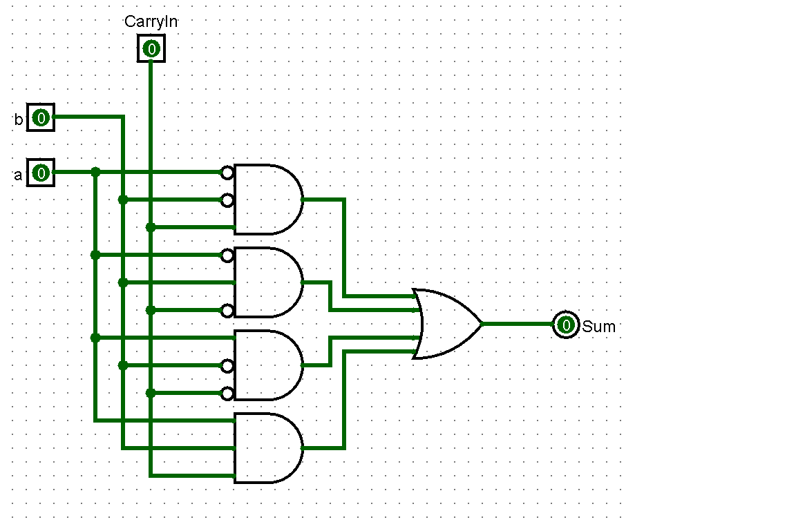
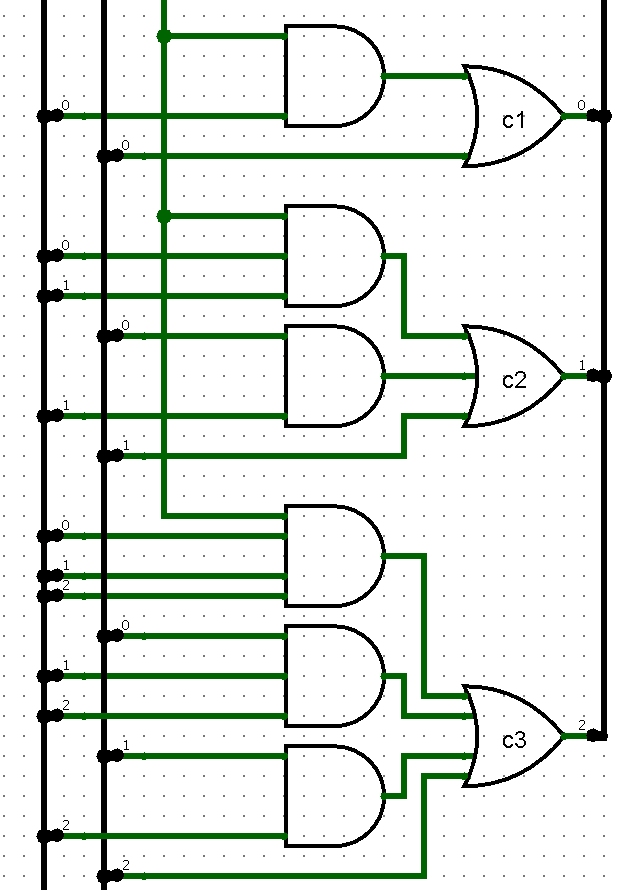
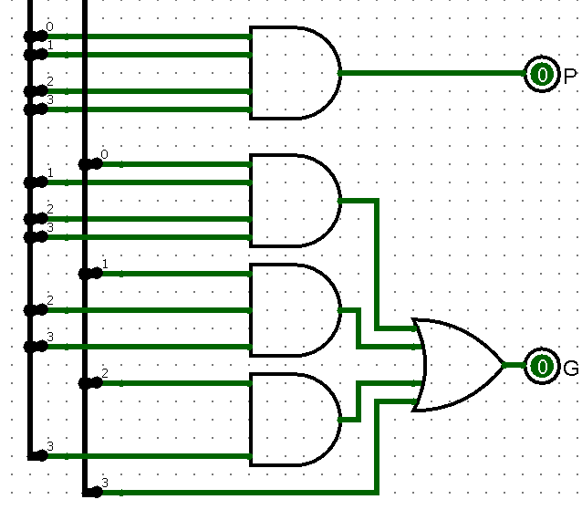
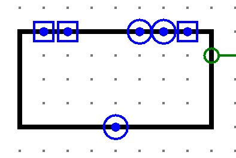

Verslag 2: 12-Bit Adder
Dit verslag werd opgesteld door:
- Naam: Laurens De Wachter
Studentennummer: s0214686
Email adres: laurens.dewachter@student.uantwerpen.be
- Naam: Simon Olivier
Studentennummer: s0211074
Email adres: simon.olivier@student.uantwerpen.be
Aantal man-uren besteed: 3 uur
Moeilijkheidsgraad: 5/10 (1 is heel makkelijk, 10 is heel moeilijk)
Inhoud van de oplossing
De oplossing bestaat uit de volgende bestanden:
Verslag
De 12-bit adder bestaat uit 3 delen: de 4-bit adders (die op hun beurt bestaan uit 4 1-bit adders), de carry-lookahead unit
en de overflow detection.
In het verslag zal elk ondereel overlopen worden.
1-Bit adder
Het optellen van 1-bit getallen geeft een "truth tabel". In deze tabel wordt de CarryOut verwaarloosd aangezien deze berekend zal
worden met het carry-lookahead principe.
| a |
b |
CarryIn |
sum |
| 0 |
0 |
0 |
0 |
| 0 |
0 |
1 |
1 |
| 0 |
1 |
0 |
1 |
| 0 |
1 |
1 |
0 |
| 1 |
0 |
0 |
1 |
| 1 |
0 |
1 |
0 |
| 1 |
1 |
0 |
0 |
| 1 |
1 |
1 |
1 |
Uit deze tabel wordt volgende vergelijking afgeleid: abc + abc + abc + abc
Het implementeren van deze vergelijking in een logisch circuit geeft volgend circuit:

4-Bit adder
De 4-bit adder bestaat uit 4 a-bit adders in serie. Deze adders hebben elks de juiste bit van a, de juist bit van b en een
CarryIn nodig. De juiste bits van a en b zijn makkelijk door te geven met behulp van splitters. De CarryIn moet eerst berekend
worden.
Carry-lookahead
Om de CarryIn van elke 1-bit adder te berekenen wordt gebruik gemaakt van het carry-lookahead principe. Hierbij geldt dat:
- pi = ai + bi
- gi = ai * bi
- ci+1 = gi + (pi * ci)
Met behulp van deze formules kunnen c1, c2 en c3 berekend worden. (c0 wordt gegeven
vanuit de carry-lookahead unit die verder nog besproken zal worden)
- c1 = g0 + (p0 * c0)
- c2 = g1 + (p1 * g0) + (p1 * p0 * c0)
- c2 = g2 + (p2 * g1) + (p2 * p1 * g0) +
(p2 * p1 * p0 * c0)
Geïmplementeerd in een logisch circuit ziet dit er als volgt uit.

Super propagates en -generates
De enigste CarryIn die nu nog niet berekent is, is c0. Hiervoor wordt de carry-lookahead unit gebruikt. Deze unit
berekent voor elke 4-bit adder c0, maar heeft hiervoor wel de super propagate (P) en -generate (G) van elke 4-bit
Adder nodig. De formules voor P en G gaan als volgt:
- P = p3 * p2 * p1 * p0
- G = g3 + (p3 * g2) + (p3 * p2 * g1) +
(p3 * p2 * p1 * g0)
Geïmplementeerd in een logisch circuit ziet dit er als volgt uit.

Input/Output
Na de toevoegingen van de 1-bit adders, de carry lookahead en de super propagate en -generate ziet de IO van de 4-bit adder
er als volgt uit.

test